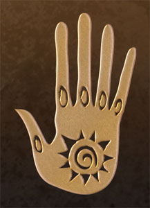
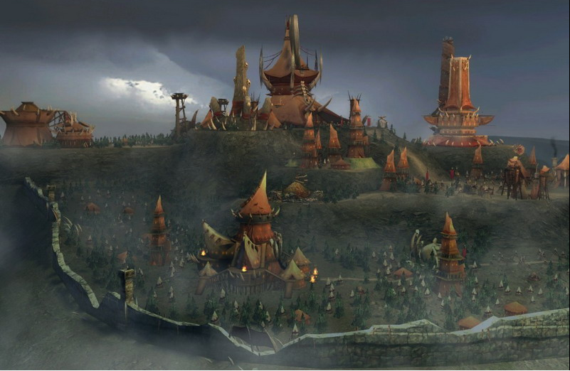
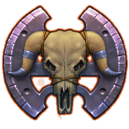

Miasto Przystań
Motto: Najpierw atakuj ...myśl potem!



Charakterystyka:
- Społeczeństwo: Orkowie, Gobliny, Cyklopy, Zwierzoludzie
- Przypisane kolory: Botnisty
- Bóstwa: Elrath – Smok Światłości i jego słudzy Aniołowie
- Filozofia: Dzicy, dumni i niepodlegli
- Królestwo:Step Ranaaru, Wyspy Pao, pustynia Sahaaru
- Stolica: Brak
- Symbole: Ręka Ojca Niebo, Topór
Opis:
Lud Orków tworzą plemiona wędrownych barbarzyńców. Są oni rozproszonymi po świecie, lecz dumnymi przedstawicielami swej rasy, ocalałymi od wielowiekowych prześladowań. Słyną z oddziałów zaciekłych wojowników wspieranych przez potężnych szamanów. Orkowie preferują otwarte przestrzenie i wolność, dzięki której przemieszczają się kiedy tylko chcą - wielu z nich wybiera wędrowne życie wśród wydm pustyni Sahaar.
Orkowie zostali stworzeni w Siedmiu Miastach podczas Wojny Krwawego Księżyca. Dokładniej w laboratoriach Al Rubit, gdzie Szkarłatni Czarodzieje eksperymentowali z krwią demonów, którą zaszczepili ludzkim niewolnikom i kryminalistom. Oddziały uderzeniowe Orków stały się decydujące dla rozstrzygnięcia konfliktu, zmieniając jego układ sił i ocalając Ashan od całkowitego zniszczenia.
Jednakże, gdy wygrana wojna już się zakończyła a niebezpieczeństwo minęło, pozostali przy życiu Orkowie zostali przesiedleni i stali się niewolnikami do pracy w kopalniach oraz przymusowymi żołnierzami, strzegącymi niebezpiecznych granic Siedmiu Miast i sąsiedniego Świętego Imperium Sokoła. Prześladowani i wzbudzający lęk, stali się zgorzkniali i rozżaleni w stosunku do swych "stworzycieli".
Ta niechęć w końcu wybuchła, gdy Orkowie wzniecili powstanie przeciw ich panom, Czarodziejom. Rozpoczęta w Shahibdiyi rebelia, przewodzona przez legendarnego Kunyaka, szybko rozprzestrzeniła się na wszystkie Siedem Miast, jak i do Świętego Imperium Sokoła. Orkowie ogłosili się wolnymi od swych panów, jak i od Smoczych Bogów, nie chcąc już przed nikim klękać - ani z posłuszeństwa, ani by oddawać komuś cześć.
Choć Orkowie i ich sojusznicy, Zwierzoludzie, walczyli zaciekle, utracili swe pozycje. Ostatecznie nie mieli wyboru i musieli uciekać na najbardziej niegościnne zakątki świata.
Gdy już osiedlili się na nowych terytoriach, oswoili tamtejsze dzikie bestie, najeżdżali lub handlowali z sąsiednimi plemionami i powoli budowali wspólną kulturę opartą o wartości dumy, odwagi i niezależności.